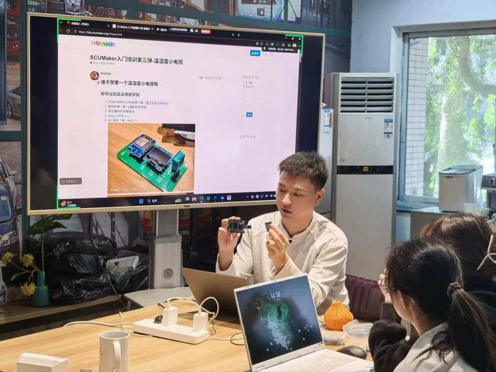
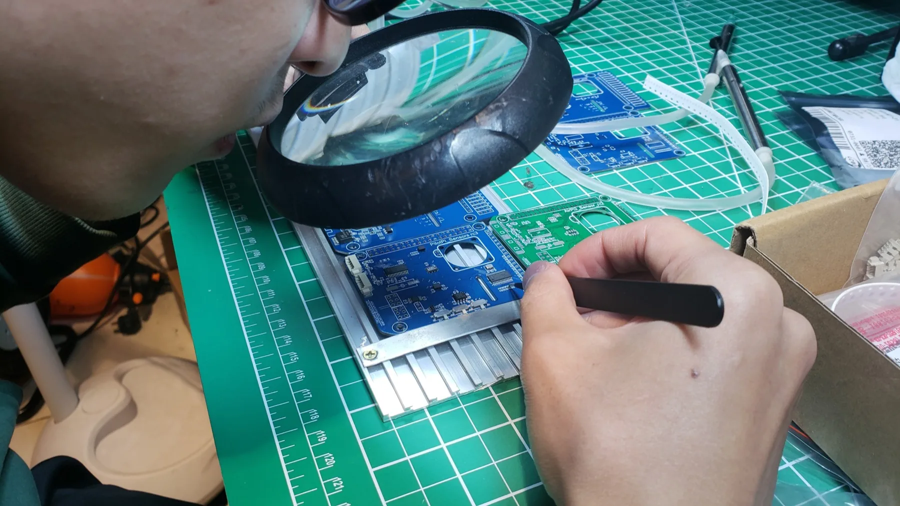
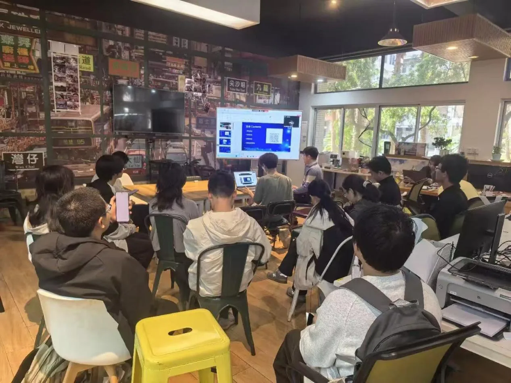
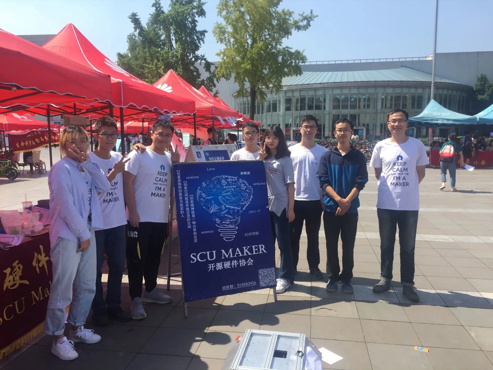

动手实践
从一个点子开始，经历设计、搭建、调试和展示，把脑中的创意变成可以触摸到的作品。

每一个想法，都有自己的宇宙。
开源硬件协会成立于 2015 年，是一个面向软硬件爱好者的学术科技社团。我们希望在明远湖畔搭建一个开放的交流平台，让同学们把想法、代码、电路和结构设计变成真实作品。
开源硬件和创客文化同属于开放共享的技术文化。创客不以盈利为目标，而是持续实践、乐于分享，把创意转化为可见、可用、可改进的现实。
无法加载粒子标志。
协会不只是一个通知群，也不只是比赛队。这里有项目、有设备、有经验分享，也有一起试错的人。
从一个点子开始，经历设计、搭建、调试和展示，把脑中的创意变成可以触摸到的作品。

软件编程、硬件电路、3D 建模、PCB 绘制和系统运维都能接触到，按兴趣逐步深入。

不定期开展讲座、培训、茶话会和比赛项目交流，让新人成长更快找到方向。

工坊、仪器、服务器和项目资源持续开放，资深会员可参与项目申请和设备体验。

不限年级，不限专业。只要你愿意认真学习、参与实践，都能在这里找到适合自己的位置。
负责协会服务器、网络和基础设施维护，保障内部服务稳定运行。
收获：Linux、网络、服务部署和自动化运维经验。
管理协会工坊与仪器设备，带领成员学习工具使用。
收获：SolidWorks、Altium Designer、3D 模型和 PCB 绘制入门。
负责文案撰写、视频剪辑、海报设计和微信推送制作。
收获：PS、PR、新媒体运营、排版设计和文案表达能力。
我们是一群喜欢追问「为什么」，
也愿意动手试试「能不能」的人。
从第一行代码，到第一个原型。
在 Maker，让好奇心找到同伴，
让脑海里的火花，成为真实的作品。